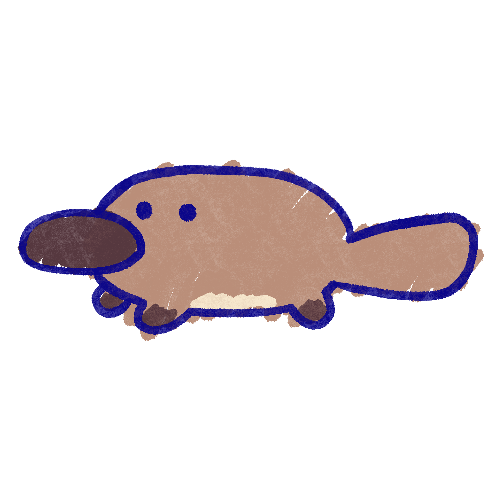

About Interact with Wombat!
Interact with Wombat! is a fun and educational experience that lets you interact with Australian animals like never before.
Feed Wombat
Feeding Wombat is easy and fun. Just tap the button below to get started.

Sing with Wombat
Get your groove on with Wombat and sing along to some classic tunes. Tap the button below to start singing!

Pet Wombat
Give Wombat some love and attention by petting them. Tap the button below to pet Wombat!

Critter Family
Learn about some of the native critters that are hiding in and around RMIT Campus. Follow the clues to a scanable QR code for more information. Click on the image below to hear the story about Platypus!
